The Old Ways
Under the cosy countryside lies an older world. Before the cottages and the gardens and the fair, the folk of the wood lived in long halls sunk under the turf, kept fires that never went out, raised runestones for their dead and treated beasts, trees, stone and wind as kin. Their halls are cold now, their seeress sleeps in the ice, and the further you go from home the older and wilder it gets.
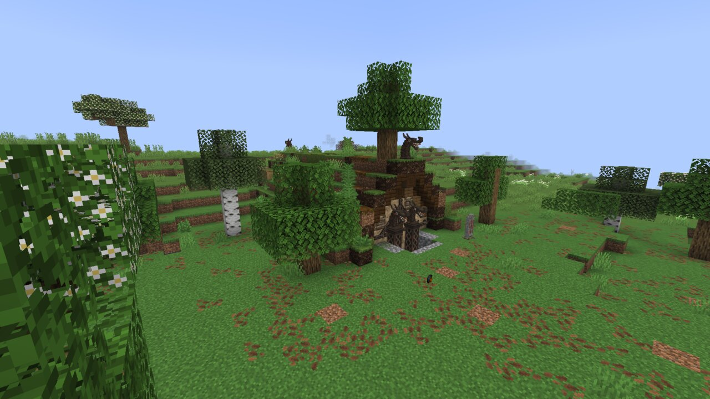
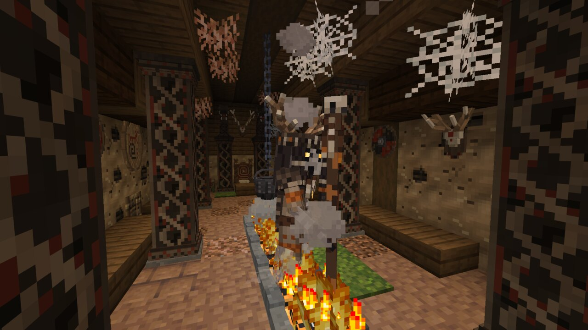
The Cold Hearth
Out in the woods, a long, low mound of turf with a dark doorway in its gable end: an old hall, half sunk into the ground, its timbers framed with wattle and daub. Inside, a long hearth of stones runs down the middle, cold for centuries, with a high seat at its head, a cauldron hung over it, an old kist, antlers, skulls and hides on the walls. A runestone stands outside.
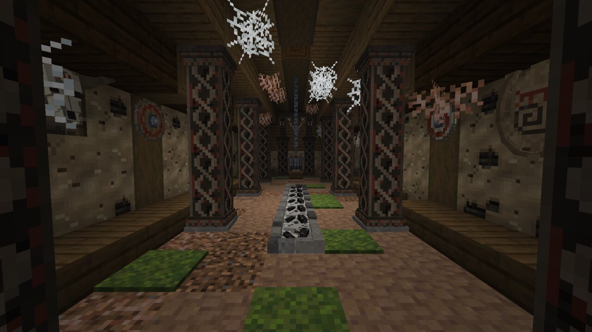
Halls are found in taiga, snowy taiga and old growth taiga, forests, birch and dark forests, windswept forests, groves
and meadows, about one every six hundred blocks. The old kist holds amber, nuggets, copper, bone, leather, flint and wool,
an axe or a goat horn, and more often than not (three times in five) a Map to the Rime Isle. Operators can find one
with /locate structure livingworld:cold_hearth.
The rite
Read the runestone
Use it to trace the runes. They say who raised it, and, in riddles, the three gifts this hall's hearth asks for: one from the hive, one from the home and one from the wild. Each hall asks for its own three.
Lay the gifts on the hearth
Use each gift on the long hearth's stones. It tells you how many it has, and when it has all three.
Strike fire after sundown
Use flint and steel on the hearth at night (the fire won't take while the sun watches).
The Keeper rises
Drums begin, smoke climbs from every stone, the fire runs out along the hearth from its heart, the gifts burn, and the Hearth-Keeper rises out of the smoke. It speaks, and gives the one who woke it the antler crown.
What the hearth can ask for, and how the runes put it:
Secret the gifts and their riddles
- Mead: “the gold the hive gives, that the hall drinks;”
- Honey: “the sweetness the small wings gather, poured out;”
- Honeycomb: “the house of the small wings, all its rooms full;”
- Bread: “what the field gives, after the stone has turned it and the oven has baked it;”
- Cheese: “the milk of the herd, pressed and kept until it is stone-hard;”
- Wool: “the coat of the flock, shorn;”
- Venison: “the flesh of the antlered one;”
- Amber: “a tear of the sun, found under the earth;”
- Salmon: “the silver one that climbs the river;”
- Wild berries: “the fruit the wild bush keeps for itself;”
The hive: mead, honey or honeycomb. The home: bread, cheese or wool. The wild: venison, amber, salmon or wild berries.
Secret what the Keeper says when it wakes
“Who wakes the fire of this hall?”
“Long has the hearth slept. Long have we waited in the ash.”
“You came with gifts of the hive, the home and the wild. So were we all kin, once: people and beasts, trees and stone and wind.”
“Feed the fire when the seasons turn, and the land about this hall will know you.”
“Take this crown, kin of the hearth. Walk among the beasts as one of them.”
The bond
While the bond holds, the hall's fire burns (light it again if it goes out and it lights itself) and the Keeper stays by it, an ancestor in the smoke: at night it drums by its fire now and then. The land round the hall is kin: crops and saplings within 32 blocks grow faster, and the hall is warm in winter.
Nothing is free. Lay one of its gifts on the hearth every season:
| What happens | |
|---|---|
| Fed this season or last | The bond holds. |
| One season missed | It hungers: the blessing stops, and the Keeper tells you the fire is hungry. Feed it and the hunger eases. |
| Two missed | It goes cold. The fire dies, and the Keeper turns: charred, its eyes ember-red. At night it rises for anyone who comes into the cold hall, and it fights. Lay it low and the hall sleeps again, and the rite can be done anew. |
The antler crown Antler Crown, worn: the beasts of the wild know you as kin. Deer and chipmunks don't flee you, and boars don't charge.
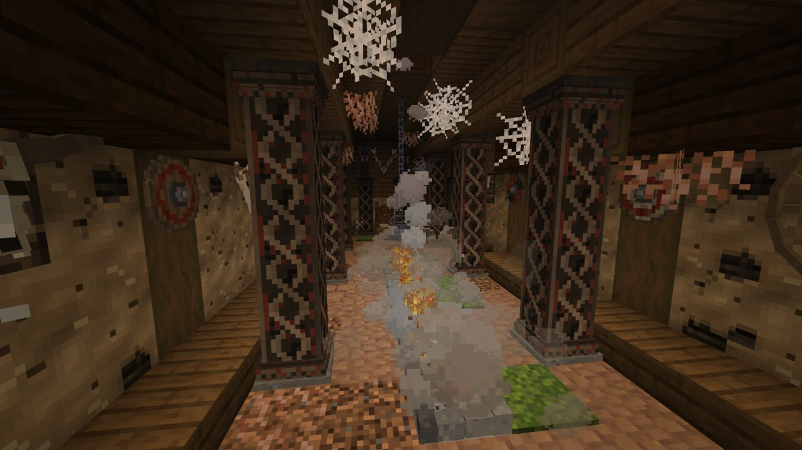
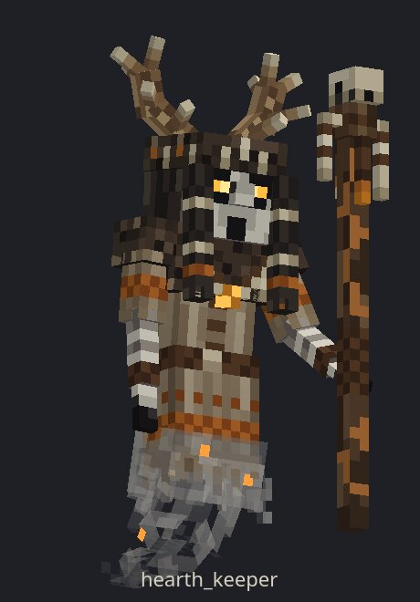
The Rime Isle
Far out in the frozen and deep frozen oceans stands a stone island held in a winter that never ends, and every day the ice creeps a little further out from it over the sea. On it stands the Rime Hof: a stave temple, black with tar and white with rime, dragons on its gables, and a belfry over it. Inside, raised at the end of the nave, a seeress waits frozen mid-word in a pillar of ice, before a rimed altar. The Cold Hearths' kists hold maps to it.
The cold there kills. On the isle even indoors is bitter, and the best wrapping only slows it: wool under leather, something hot inside you (the Warmth of a cooked meal), or the seeress's own blessing. The runestones on the isle warn you.
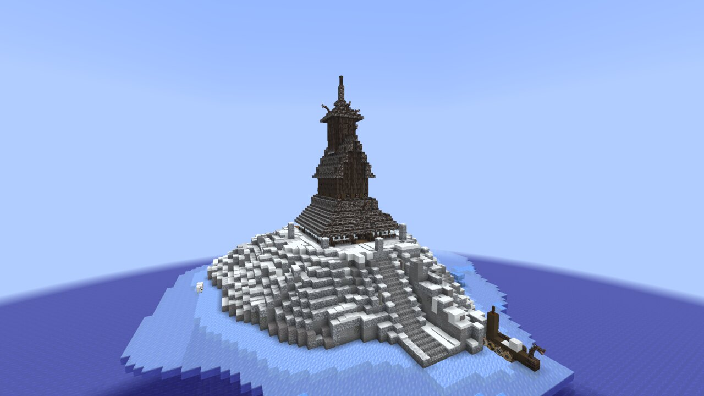
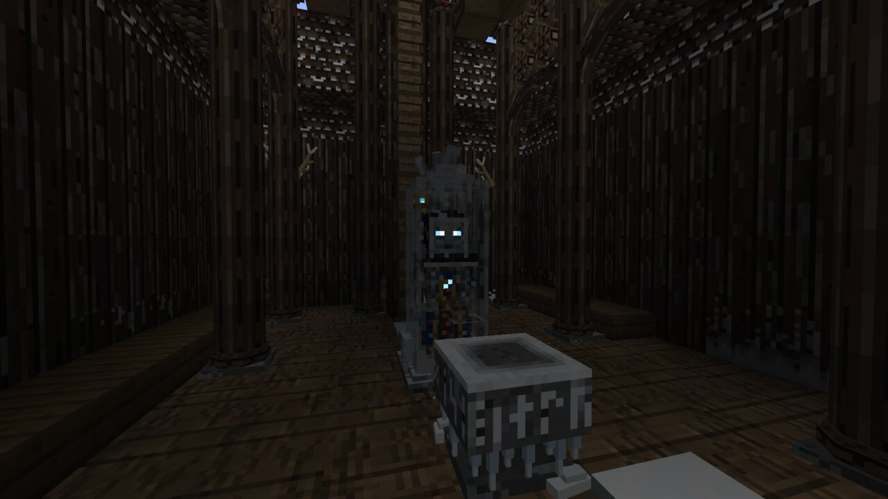
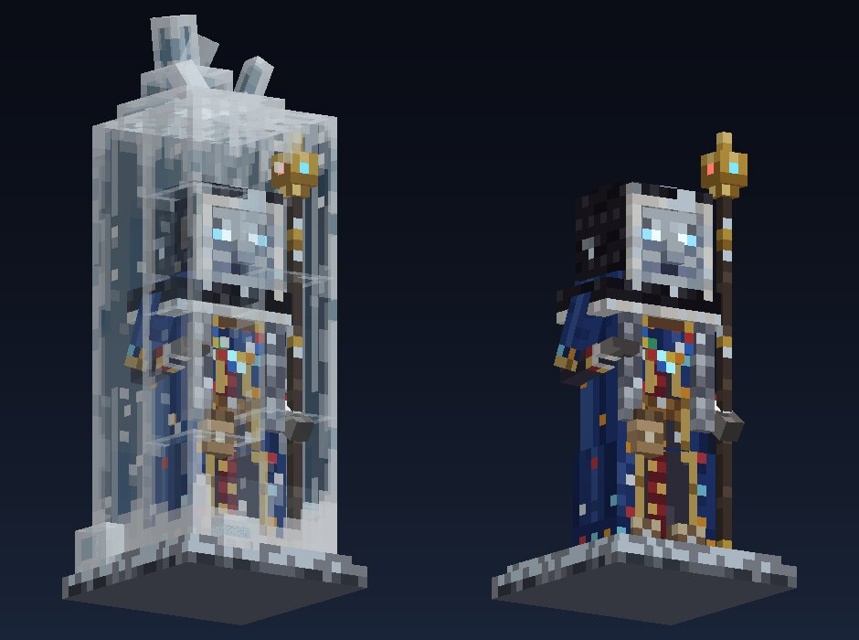
The Rime-Seeress
Hear her whisper
Use her altar. Through the ice she asks, in riddles, for three gifts.
Lay them on the altar
Each from a different kind (below). It tells you how many it has.
The ice cracks
She thaws enough to speak one of her seven sayings, and blesses those who brought the gifts against the cold: the Frost Blessing for an hour, and twenty minutes for anyone else beside you. She gives you her sayings written down, then the ice closes again, and next time she'll want three new gifts.
| Kind | What will do |
|---|---|
| Meat | mutton, beef, venison, rabbit |
| Warmth | wool, leather, rabbit hide, reindeer hide |
| Light | a candle, a torch, a lantern |
| Something sweet | honey, mead, an apple, berries |
| Treasure | gold, amber, an emerald, an amethyst shard |
| Something green | a sapling, a flower |
| Bread | bread, cheese |
The Frost Blessing: the cold can't touch you, on the isle, in a harsh winter, or in cold water.
In the belfry, up the notched ladders, the seeress's keeping: a kist of heritage seed (old lines kept through three hundred winters, sound in every way and hardy) and a little treasure. The bronze bell hangs above it.
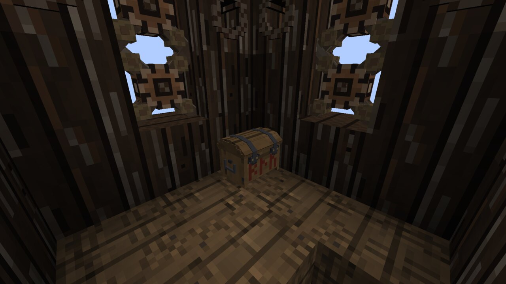
Secret the seven sayings
Secret The First Saying: The Watcher
I was old when the first cottage was built. I sat out on the burial mounds at night, and I saw.
I saw the long cold coming. So I came to the edge of the world to watch for it, and the ice took me gladly.
Bring me gifts, and I will tell you what I saw. Come without warmth, and you will stand beside me forever.
Secret The Second Saying: The Hearths
In the deep woods the old halls sleep under their turf, and their fires are ash.
The Keepers wait in the ash for kin. Wake a hearth and feed it, and the land will remember your name.
But a hearth woken and then forgotten is worse than a hearth that was never lit.
Secret The Third Saying: The Barrows
Under the green mounds the old dead lie with their gold, and they are not asleep.
They count their rings in the dark, and they hate the warm.
Go down to them with fire and iron, and take no more than you give back.
Secret The Fourth Saying: The Long Winter
Three winters will come with no summer between them, and the sun will be eaten.
Brothers will fight over the last of the bread, and the wolves will grow fat.
Those who keep their hearths fed and their larders full will see the green come back.
Secret The Fifth Saying: The Serpent
Out past the ice, under the black water, the great serpent lies coiled about the world.
It bites its own tail and dreams. When it lets go, the sea will stand up.
Fisherfolk, do not sing on the water at night.
Secret The Sixth Saying: The Small Folk
The small folk of field and garden remember the old ways, though they keep quiet about it.
The gnome who turns his head when you are not looking, the elf in the berry patch: they were here before the cottages.
Leave them a share, and your garden will never fail. Forget them, and see what happens.
Secret The Seventh Saying: The Waking
When the last hearth goes cold, I will wake for good and walk across the ice to the land.
Pray that the hearths stay lit, child, for I do not wish to walk.
Now go home and be warm. That is the whole of wisdom.
The old ways' kit
Everything the halls and the hof are built from is yours to build with too. All of it is in the Wildhearth creative tab, and most of it can be crafted.
| What it is | |
|---|---|
| Kist | A Viking chest: long and low, iron-strapped, runes along the front. Its lid lifts as you open it. Old ones turn up in the halls and on the isle. |
| Bronze Bell | A squat bell hung from an oak headstock. Use it, or hit it, to ring it: it swings the way it was struck. |
| High Seat | The carved seat of the hall's head, two blocks tall. Sit in it; a skald likes it best of any seat. |
| Hanging Cauldron | Hang it over a fire from a chain. Fill it with a water bucket; over a fire it steams. |
| Shield Rail | A ship's rail hung with round shields, in four paints. |
| Dragon Prow | A longship's carved dragon head, two blocks tall. |
| Clinker Planks | Overlapping hull strakes, for a longship's sides. |
| Notched Ladder | A log with steps cut into it: climbable, as old halls had. |
| Adzed Planks | Hand-hewn floorboards, the adze marks still on them. |
| Hoarfrost Web | A cobweb rimed with frost, for cold lofts. |
And the props of the halls: Runestone Carved Post Carved Beast Head Antler Rack Beast Skull Painted Hide Warp-Weighted Loom Round Shield Frame Drum Bone Rattle Peat Turf Sod Cracked Earth
The hof's timber and stone: Tarred Shingles Rimed Shingles Tarred Staves Rimed Staves Rimed Stone Rimed Cobblestone Gable Dragon Carved Ridge Crest Carved Portal Jamb Carved Portal Arch Round Window Stave Mast Mask Capital Arch Brace Timber Strut
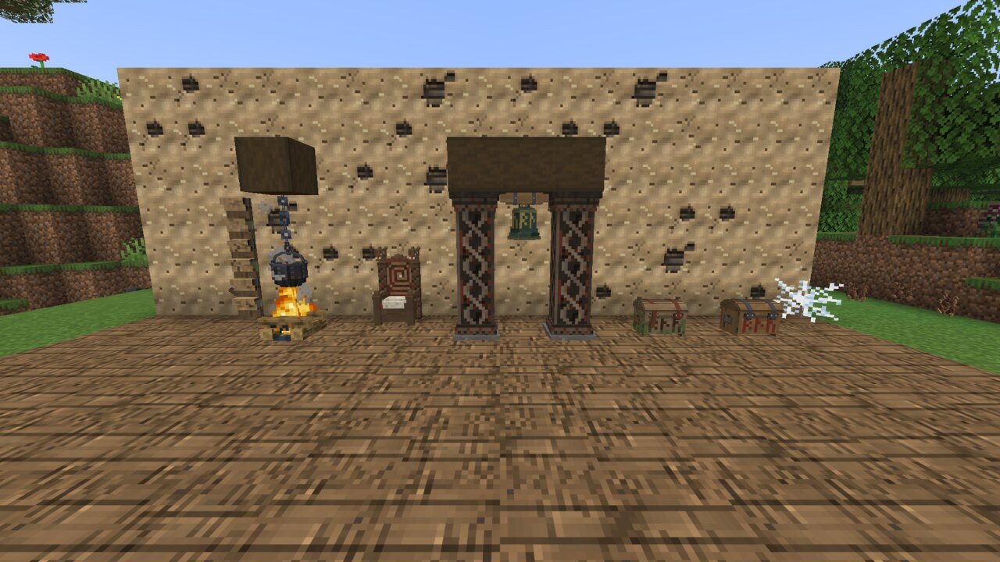
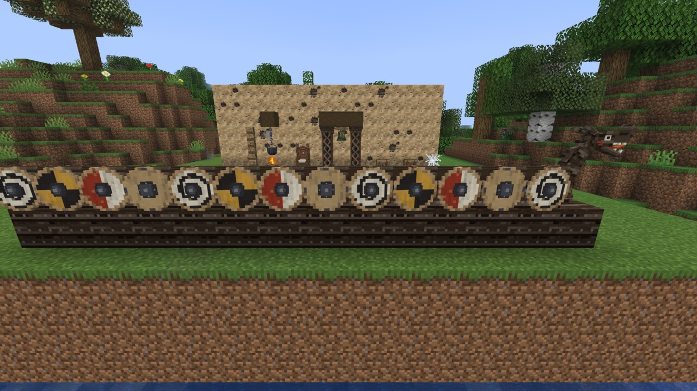
Timber framing
The halls' walls are timber frames filled with wattle (woven hazel, which joins up with its neighbours) and daub (clay and straw over it). Put a Timber Beam timber beam on a face of wattle or daub and it stands proud of the wall:
- Use it to change its shape: a post, a rail, or both crossed.
- Crouch and use it to change its brace: rising, falling, crossed, the halves of each, a peak or a vee.
- An axe takes it off again.
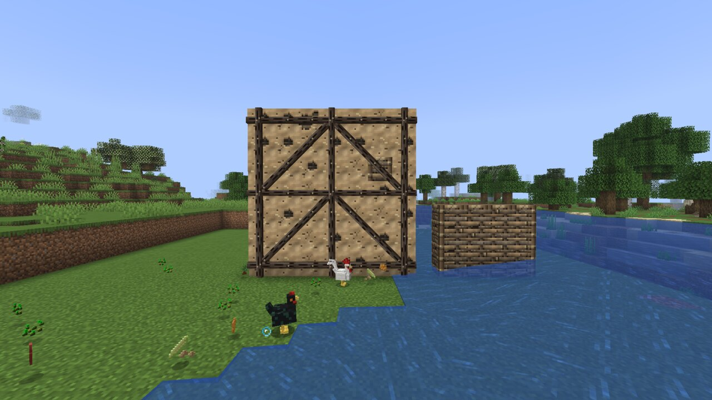
Advancements
The Old Ways tab:
- The Old Ways: Find what lies under the cosy countryside, older than any cottage
- Reading the Runes: Trace the runes of a runestone
- Kin of the Hearth: Relight the cold hearth of an old hall, and meet its Keeper
- The Seeress in the Ice: Reach the Rime Isle and hear the seeress whisper through her ice
- What the Seeress Saw: Bring the Rime-Seeress her gifts and hear a prophecy
- All She Foresaw: Hear all seven of the Rime-Seeress's sayings
Bog iron, the moss folk and the skald have their own: see Bog iron & smithing, The moss folk and The skald.